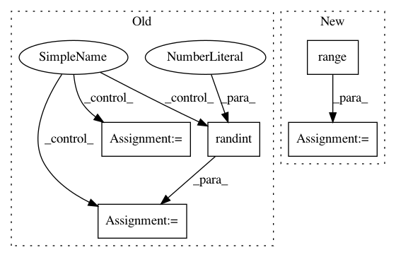

db3d4586a34f3734edf92454b9c16e1511369ddf,skmultiflow/classification/trees/arf_hoeffding_tree.py,RandomLearningNode,learn_from_instance,#RandomLearningNode#Any#Any#Any#Any#,75
Before Change
for j in range(self.subspace_size):
is_unique = False
while not is_unique:
self.list_attributes[j] = randint(0, self.subspace_size - 1)
is_unique = True
for i in range(j):
if self.list_attributes[j] == self.list_attributes[i]:
is_unique = False
break
After Change
except KeyError:
self._observed_class_distribution[y] = weight
if not self.list_attributes:
population = range(get_dimensions(X)[1])
self.list_attributes = sample(population, self.subspace_size)
for i in self.list_attributes:
try:
obs = self._attribute_observers[i]
In pattern: SUPERPATTERN
Frequency: 3
Non-data size: 5
Instances
Project Name: scikit-multiflow/scikit-multiflow
Commit Name: db3d4586a34f3734edf92454b9c16e1511369ddf
Time: 2018-03-16
Author: jacob.montiel@gmail.com
File Name: skmultiflow/classification/trees/arf_hoeffding_tree.py
Class Name: RandomLearningNode
Method Name: learn_from_instance
Project Name: osmr/imgclsmob
Commit Name: 4ad1ebea7992d840e028ff513dc81e0073755d6e
Time: 2019-02-24
Author: osemery@gmail.com
File Name: pytorch/pytorchcv/models/others/oth_fractalnet_cifar10_2.py
Class Name: FractalNet
Method Name: forward
Project Name: mathics/Mathics
Commit Name: f592ce49086098fe835de68a7ee7bf49967b14ad
Time: 2016-08-22
Author: Bernhard.Liebl@gmx.org
File Name: mathics/algorithm/clusters.py
Class Name:
Method Name: _shuffled_range